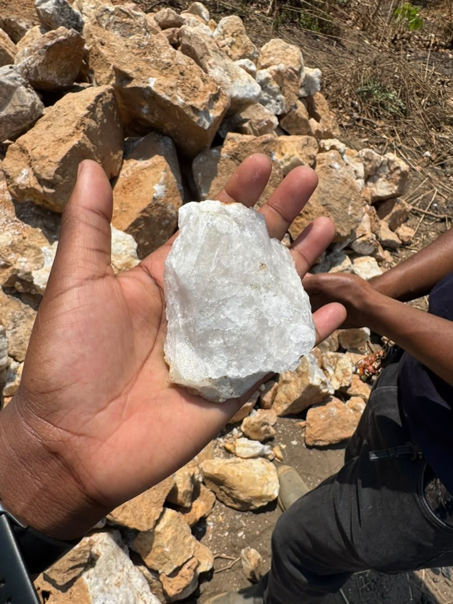
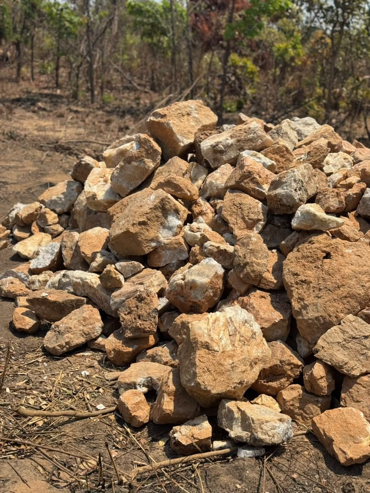
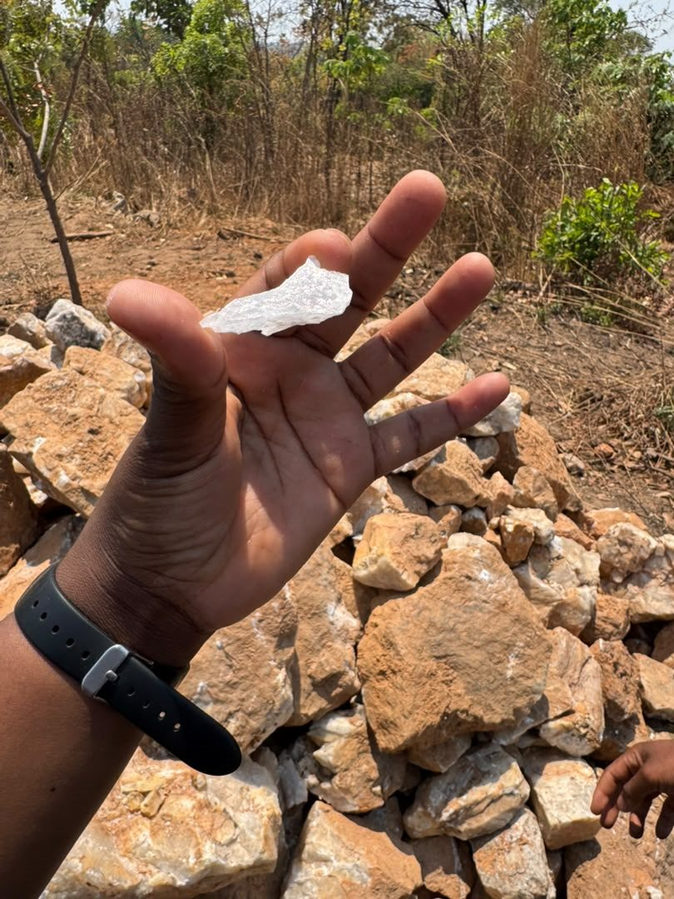

Industrial Mineral Sourcing
Support in discussing suitable industrial mineral materials against a defined operational requirement.
Omni Minerals
Industrial mineral sourcing and supply support for processing plants, mining operations, manufacturers and other customers with recurring material requirements.
Overview
Omni Minerals supports industrial mineral requirements through sourcing, bulk supply, mine deliveries, long-term supply agreements and processing plant support.
The documented material range includes silica stone, silica flux, limestone, quartz and other industrial minerals. Specific material identity, grade, specification, quantity and delivery requirements must be confirmed for each enquiry.
What we support
We help frame the material requirement around the intended application, delivery context and recurring supply needs, while leaving technical and commercial specifications to the relevant confirmation process.
Support in discussing suitable industrial mineral materials against a defined operational requirement.
Supply discussions for customers requiring material in bulk, subject to confirmed availability and commercial terms.
Coordination discussions for delivery requirements connected to mine and industrial operating locations.
Material supply conversations shaped around processing plant and recurring operational requirements.
Support for customers exploring recurring supply arrangements, with terms confirmed directly for each engagement.
Clear communication around material, volume, delivery context and documentation before a commercial discussion proceeds.

Industrial Mineral Materials
The supplied white stone photograph is used as a representative field image. It is not presented as a confirmed silica, quartz or other geological identification.
Industrial mineral requirements should be supported by the appropriate material description, testing or documentation for the intended application.
Silica stone is included in the documented industrial mineral range, with specific requirements confirmed per enquiry.
Silica flux requirements can be discussed in the context of relevant processing and supply needs.
Limestone is included among the documented industrial minerals supported by the company profile.
Quartz and other industrial minerals may be discussed where the required material and application are clearly described.
Applications and markets
Industrial mineral supply may support mining and mineral processing operations, industrial applications, plant supply and recurring bulk material requirements.


Talk to Omni Minerals about your industrial mineral requirement.